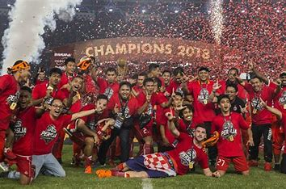

Pada zaman Hindia Belanda, nama awal Persija adalah VIJ (Voetbalbond Indonesische Jacatra).[4] Pasca-Republik Indonesia kembali ke bentuk negara kesatuan, VIJ berganti nama menjadi Persija (Persatuan sepak bola Indonesia Jakarta). Saat masih bernama VIJ, markas Persija berada di Stadion VIJ. Sejumlah nama ikut membesarkan klub ibu kota ini. Diantaranya tercatat dalam sejarah Persija Jakarta nama M.H. Thamrin, yang diakui sebagai pahlawan nasional. Selain itu ada juga nama Habib Ali Kwitang, yang tercatat ikut membesarkan Persija. Pada saat itu, NIVU (Nederlandsch-Indische Voetbal Unie) sebagai organisasi tandingan PSSI masih ada. Di sisi lain, VBO (Voetbalbond Batavia en Omstreken) sebagai bond (perserikatan) tandingan Persija juga masih ada. Terlepas dari takdir atau bukan, seiring dengan berdaulatnya negara Indonesia, NIVU mau tidak mau harus bubar. Mungkin juga karena secara sosial politik sudah tidak kondusif (mendukung). Suasana tersebut akhirnya merembet ke anggotanya, antara lain VBO. Pada pertengahan tahun 1951, VBO mengadakan pertemuan untuk membubarkan diri (likuidasi) dan menganjurkan dirinya untuk bergabung dengan Persija. Dalam perkembangannya, VBO bergabung ke Persija. Dalam turnamen segitiga persahabatan, gabungan pemain bangsa Indonesia yang tergabung dalam Persija "baru" itu berhadapan dengan Belanda dan Tionghoa. Inilah hasilnya: Persija (Indonesia) vs Belanda 3-3 (29 Juni 1951), Belanda vs Tionghoa 4-3 (30 Juni 1951), dan Persija (Indonesia) vs Tionghoa 3-2 (1 Juli 1951). Semua pertandingan berlangsung di lapangan BVC Merdeka Selatan, Jakarta.
